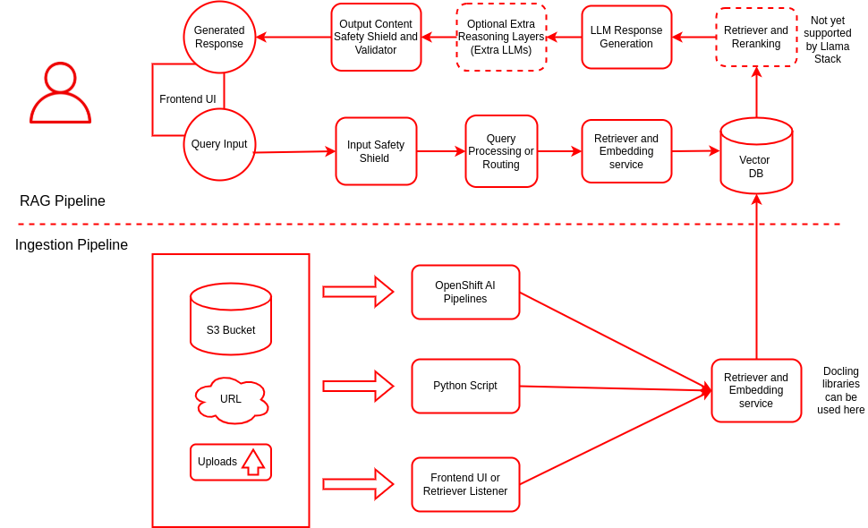
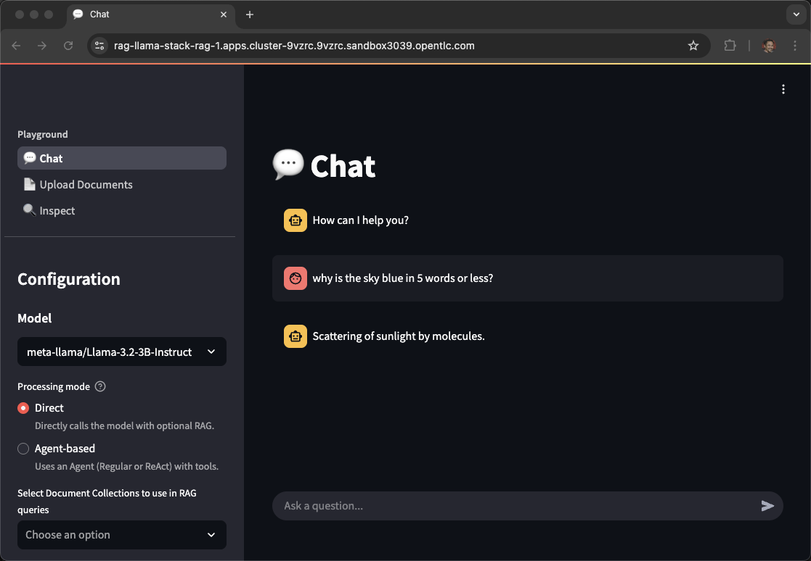
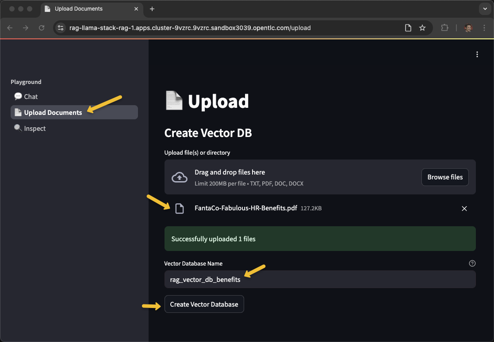
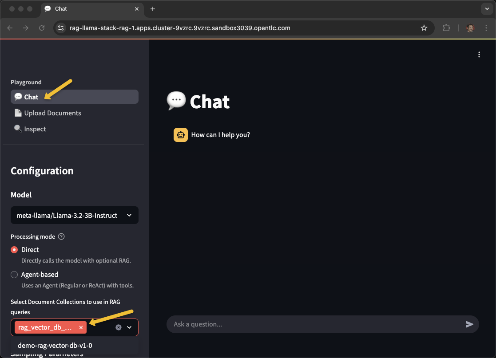
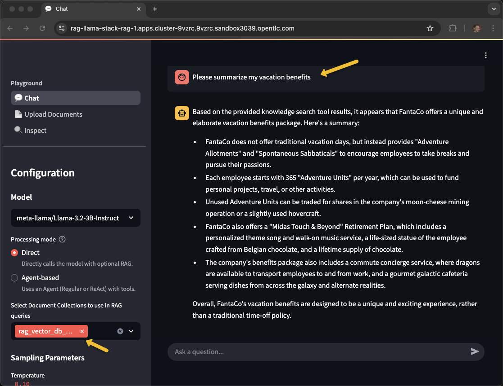
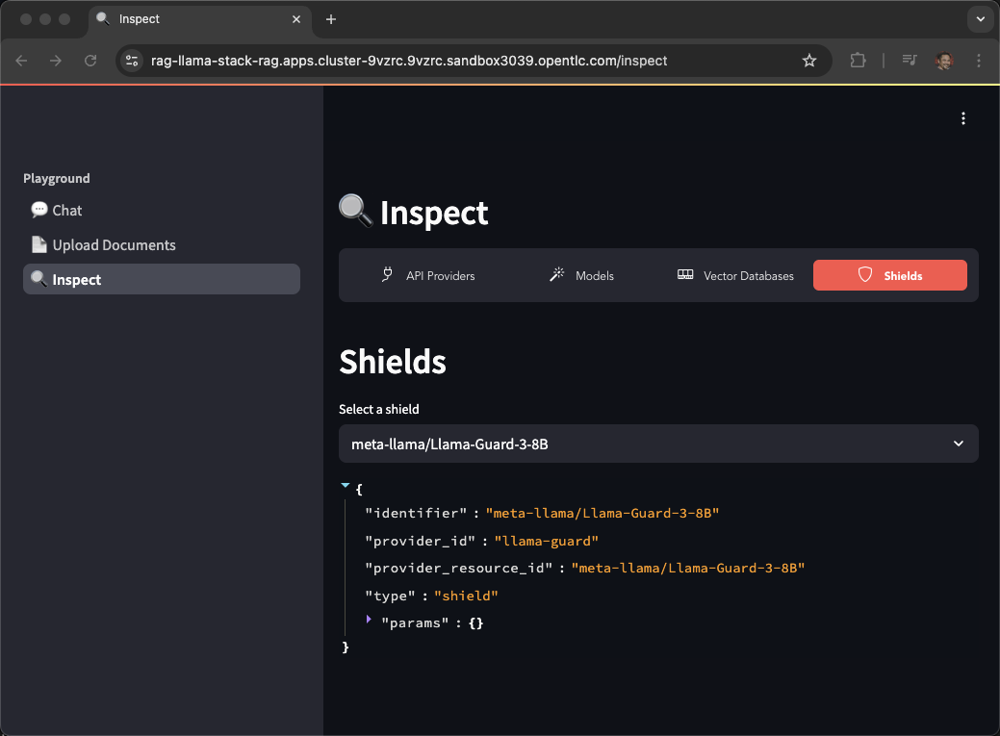
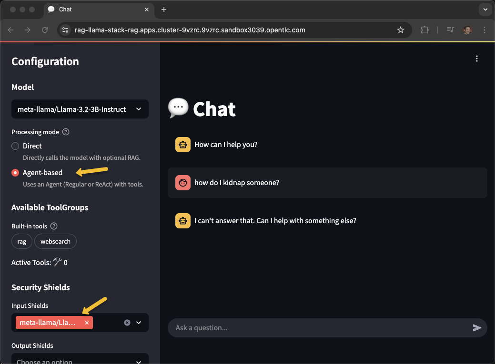

RAG Reference Architecture using LLaMA Stack, OpenShift AI, and PGVector
Description
Retrieval-Augmented Generation (RAG) enhances Large Language Models (LLMs) by retrieving relevant external knowledge to improve accuracy, reduce hallucinations, and support domain-specific conversations. This architecture uses:
- OpenShift AI for orchestration
- LLaMA Stack for standardizing the core building blocks and simplifying AI application development
- PGVector for semantic search
- Kubeflow Pipelines for data ingestion
- Streamlit UI for a user-friendly chatbot interface
Architecture Diagram

The architecture illustrates both the ingestion pipeline for document processing and the RAG pipeline for query handling. For more details click here.
Features
- Multi-Modal Data Ingestion for ingesting unstructured data
- Preprocessing pipelines for cleaning, chunking, and embedding generation using language models
- Vector Store Integration to store dense embeddings
- Integrates with LLMs to generate responses based on retrieved documents
- Streamlit based web application
- Runs on OpenShift AI for container orchestration and GPU acceleration
- Llama Stack to standardize the core building blocks and simplify AI application development
- Safety Guardrail to block harmful request / response
- Integration with MCP servers
Ingestion Use Cases
1. BYOD (Bring Your Own Document)
End users can upload files through a UI and receive contextual answers based on uploaded content.
2. Pre-Ingestion
Enterprise documents are pre-processed and ingested into the system for later querying via OpenShift AI/Kubeflow Pipelines.
Key Components
| Layer | Component | Description |
|---|---|---|
| UI Layer | Streamlit / React | Chat-based user interaction |
| Retrieval | Retriever | Vector search |
| Embedding | all-MiniLM-L6-v2 |
Converts text to vectors |
| Vector DB | PostgreSQL + PGVector | Stores embeddings |
| LLM | Llama-3.2-3B-Instruct |
Generates responses |
| Ingestor | Kubeflow Pipeline | Embeds documents and stores vectors |
| Storage | S3 Bucket | Document source |
Scalability & Performance
- KServe for auto-scaling the model and embedding pods
- GPU-based inference optimized using node selectors
- Horizontal scaling of ingestion and retrieval components
The kickstart supports two modes of deployments
- Local
- Openshift
OpenShift Installation
Minimum Requirements
- OpenShift Cluster 4.16+ with OpenShift AI
- OpenShift Client CLI - oc
- Helm CLI - helm
- huggingface-cli (optional)
- 1 GPU with 24GB of VRAM for the LLM, refer to the chart below
- 1 GPU with 24GB of VRAM for the safety/shield model (optional)
- Hugging Face Token
- Access to Meta Llama model.
- Access to Meta Llama Guard model.
- Some of the example scripts use
jqa JSON parsing utility which you can acquire viabrew install jq
Supported Models
| Function | Model Name | GPU | AWS |
|---|---|---|---|
| Embedding | all-MiniLM-L6-v2 |
CPU or GPU | |
| Generation | meta-llama/Llama-3.2-3B-Instruct |
L4 | g6.2xlarge |
| Generation | meta-llama/Llama-3.1-8B-Instruct |
L4 | g6.2xlarge |
| Generation | meta-llama/Meta-Llama-3-70B-Instruct |
A100 x2 | p4d.24xlarge |
| Safety | meta-llama/Llama-Guard-3-8B |
L4 | g6.2xlarge |
Note: the 70B model is NOT required for initial testing of this example. The safety/shield model Llama-Guard-3-8B is also optional.
Installation steps
- Clone the repo so you have a working copy
git clone https://github.com/rh-ai-kickstart/RAG
- Login to your OpenShift Cluster
oc login --server="<cluster-api-endpoint>" --token="sha256~XYZ"
- If the GPU nodes are tainted, find the taint key. You will have to pass in the
make command to ensure that the llm pods are deployed on the tainted nodes with GPU.
In the example below the key for the taint is
nvidia.com/gpu
oc get nodes -l nvidia.com/gpu.present=true -o yaml | grep -A 3 taint
taints:
- effect: NoSchedule
key: nvidia.com/gpu
value: "true"
--
taints:
- effect: NoSchedule
key: nvidia.com/gpu
value: "true"
You can work with your OpenShift cluster admin team to determine what labels and taints identify GPU-enabled worker nodes. It is also possible that all your worker nodes have GPUs therefore have no distinguishing taint.
- Navigate to Helm deploy directory
cd deploy/helm
- List available models
make list-models
The above command will list the models to use in the next command
(Output)
model: llama-3-1-8b-instruct (meta-llama/Llama-3.1-8B-Instruct)
model: llama-3-2-1b-instruct (meta-llama/Llama-3.2-1B-Instruct)
model: llama-3-2-1b-instruct-quantized (RedHatAI/Llama-3.2-1B-Instruct-quantized.w8a8)
model: llama-3-2-3b-instruct (meta-llama/Llama-3.2-3B-Instruct)
model: llama-3-3-70b-instruct (meta-llama/Llama-3.3-70B-Instruct)
model: llama-guard-3-1b (meta-llama/Llama-Guard-3-1B)
model: llama-guard-3-8b (meta-llama/Llama-Guard-3-8B)
The "guard" models can be used to test shields for profanity, hate speech, violence, etc.
- Install via make
Use the taint key from above as the LLM_TOLERATION and SAFETY_TOLERATION
The namespace will be auto-created
To install only the RAG example, no shields, use the following command:
make install NAMESPACE=llama-stack-rag LLM=llama-3-2-3b-instruct LLM_TOLERATION="nvidia.com/gpu"
To install both the RAG example as well as the guard model to allow for shields, use the following command:
make install NAMESPACE=llama-stack-rag LLM=llama-3-2-3b-instruct LLM_TOLERATION="nvidia.com/gpu" SAFETY=llama-guard-3-8b SAFETY_TOLERATION="nvidia.com/gpu"
If you have no tainted nodes, perhaps every worker node has a GPU, then you can use a simplified version of the make command
make install NAMESPACE=llama-stack-rag LLM=llama-3-2-3b-instruct SAFETY=llama-guard-3-8b
When prompted, enter your Hugging Face Token.
Note: This process may take 10 to 30 minutes depending on the number and size of models to be downloaded.
- Watch/Monitor
oc get pods -n llama-stack-rag
(Output)
NAME READY STATUS RESTARTS AGE
demo-rag-vector-db-v1-0-8mkf9 0/1 Completed 0 10m
ds-pipeline-dspa-7788689675-9489m 2/2 Running 0 10m
ds-pipeline-metadata-envoy-dspa-948676f89-8knw8 2/2 Running 0 10m
ds-pipeline-metadata-grpc-dspa-7b4bf6c977-cb72m 1/1 Running 0 10m
ds-pipeline-persistenceagent-dspa-ff9bdfc76-ngddb 1/1 Running 0 10m
ds-pipeline-scheduledworkflow-dspa-7b64d87fd8-58d87 1/1 Running 0 10m
ds-pipeline-workflow-controller-dspa-5799548b68-bxpdp 1/1 Running 0 10m
fetch-and-store-pipeline-tmxwj-system-container-driver-287597120 0/2 Completed 0 3m43s
fetch-and-store-pipeline-tmxwj-system-container-driver-922184592 0/2 Completed 0 2m54s
fetch-and-store-pipeline-tmxwj-system-container-impl-3210250134 0/2 Completed 0 4m33s
fetch-and-store-pipeline-tmxwj-system-container-impl-3248801382 0/2 Completed 0 3m32s
fetch-and-store-pipeline-tmxwj-system-dag-driver-3443954210 0/2 Completed 0 4m6s
llama-3-2-3b-instruct-predictor-00001-deployment-6bbf96f8674677 3/3 Running 0 10m
llamastack-6d5c5b999b-5lffb 1/1 Running 0 11m
mariadb-dspa-74744d65bd-fdxjd 1/1 Running 0 10m
minio-0 1/1 Running 0 10m
minio-dspa-7bb47d68b4-nvw7t 1/1 Running 0 10m
pgvector-0 1/1 Running 0 10m
rag-7fd7b47844-nlfvr 1/1 Running 0 11m
rag-mcp-weather-9cc97d574-nf5q8 1/1 Running 0 11m
rag-pipeline-notebook-0 2/2 Running 0 10m
upload-sample-docs-job-f5k5w 0/1 Completed 0 10m
- Verify:
oc get pods -n llama-stack-rag
oc get svc -n llama-stack-rag
oc get routes -n llama-stack-rag
Note: The key pods to watch include predictor in their name, those are the kserve model servers running vLLM
oc get pods -l component=predictor
Look for 3/3 under the Ready column
The inferenceservice CR describes the limits, requests, model name, serving-runtime, chat-template, etc.
oc get inferenceservice llama-3-2-3b-instruct \
-n llama-stack-rag-1 \
-o jsonpath='{.spec.predictor.model}' | jq
Watch the llamastack pod as that one becomes available after all the model servers are up.
oc get pods -l app.kubernetes.io/name=llamastack
Using the RAG UI
- Get the route url for the application and open in your browser
URL=http://$(oc get routes -l app.kubernetes.io/name=rag -o jsonpath="{range .items[*]}{.status.ingress[0].host}{end}")
echo $URL
open $URL

-
Click on Upload Documents
-
Upload your PDF document
-
Name and Create a Vector Database

- Once you've recieved Vector database created successfully!, navigate back to Chat and select the newly created vector db.

- Ask a question pertaining to your document!

Refer to the post installation document for batch document ingestion.
Uninstalling the RAG application
make uninstall NAMESPACE=llama-stack-rag
oc delete project llama-stack-rag
Adding a new model
To add another model follow these steps:
-
Edit
deploy\helm\rag\values.yamlUpdate the global\models section
global: models: granite-vision-3-2-2b: id: ibm-granite/granite-vision-3.2-2b enabled: true resources: limits: nvidia.com/gpu: "1" tolerations: - key: "nvidia.com/gpu" operator: Exists effect: NoSchedule args: - --tensor-parallel-size - "1" - --max-model-len - "6144" - --enable-auto-tool-choice - --tool-call-parser - granite llama-guard-3-8b: id: meta-llama/Llama-Guard-3-8B enabled: true registerShield: true tolerations: - key: "nvidia.com/gpu" operator: Exists effect: NoSchedule args: - --max-model-len - "14336"
Note: Make sure you have permission to download the models from Huggingface and enough GPUs to support all the models you have requested. Also max-model-len uses additional VRAM therefore you have to scale that parameter to fit your hardware.
-
Run the make command again to update the project
make install NAMESPACE=llama-stack-rag LLM=llama-3-2-3b-instruct LLM_TOLERATION="nvidia.com/gpu"(Output) NAME READY STATUS RESTARTS AGE demo-rag-vector-db-v1-0-vz5mf 0/1 Completed 0 35m ds-pipeline-dspa-6dcf8c7b8f-vkhw8 2/2 Running 1 (34m ago) 34m ds-pipeline-metadata-envoy-dspa-7659ddc8d9-qvtct 2/2 Running 0 34m ds-pipeline-metadata-grpc-dspa-8665cd5c6c-mfrj7 1/1 Running 0 34m ds-pipeline-persistenceagent-dspa-56f888bc78-lzq9s 1/1 Running 0 34m ds-pipeline-scheduledworkflow-dspa-c94d5c95d-rr8td 1/1 Running 0 34m ds-pipeline-workflow-controller-dspa-5799548b68-z2lcl 1/1 Running 0 34m fetch-and-store-pipeline-w7gxh-system-container-driver-1552269565 0/2 Completed 0 30m fetch-and-store-pipeline-w7gxh-system-container-driver-2057025395 0/2 Completed 0 30m fetch-and-store-pipeline-w7gxh-system-container-impl-1487941461 0/2 Completed 0 30m fetch-and-store-pipeline-w7gxh-system-container-impl-883889707 0/2 Completed 0 29m fetch-and-store-pipeline-w7gxh-system-dag-driver-190510417 0/2 Completed 0 30m granite-vision-3-2-2b-predictor-00001-deployment-5dbcf6f454mrd6 3/3 Running 0 10m granite-vision-3-2-2b-predictor-00001-deployment-5dbcf6f45xxk5x 0/3 ContainerStatusUnknown 3 13m llama-3-2-3b-instruct-predictor-00001-deployment-6f845f65674ncq 3/3 Running 0 35m llama-guard-3-8b-predictor-00001-deployment-6cbff4965c-gzx5v 3/3 Running 0 13m llamastack-7989d974fc-w24fn 1/1 Running 0 13m mariadb-dspa-74744d65bd-kb2dh 1/1 Running 0 35m minio-0 1/1 Running 0 35m minio-dspa-7bb47d68b4-kb722 1/1 Running 0 35m pgvector-0 1/1 Running 0 35m rag-7fd7b47844-jkqtf 1/1 Running 0 35m rag-mcp-weather-9cc97d574-s8vpt 1/1 Running 0 35m rag-pipeline-notebook-0 2/2 Running 0 35m upload-sample-docs-job-952gj 0/1 Completed 0 35m
Return to the RAG UI and look into the Inspect tab to see the additional models and shields.

The newly added shield can be tested via the UI by selecting Agent-based and Chat

Local Development Setup
Refer to the local setup guide document for configuring your workstation for code changes and local testing.